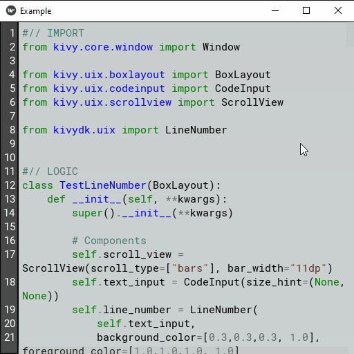

Line Number❖
kivydk.uix.widgets.line_number
Overview❖
This module provides the LineNumber widget, a companion component for
TextInput that renders synchronized line numbers
alongside editable text.
Is intended for use in text editors, code editors and any UI
component where visible line numbering is required. The widget integrates
cleanly with both standalone TextInput instances and TextInputs embedded inside
a ScrollView.
The LineNumber widget handles automatic sizing, vertical alignment and scroll synchronization, ensuring that the displayed line numbers always match the visible portion of the associated TextInput.
Example❖
Sample demonstrating how LineNumber can be used to draw the line numbers.

1#// IMPORT
2from kivy.uix.boxlayout import BoxLayout
3from kivy.uix.codeinput import CodeInput
4from kivy.uix.scrollview import ScrollView
5
6from kivydk.uix import LineNumber
7
8
9#// LOGIC
10class TestLineNumber(BoxLayout):
11 def __init__(self, **kwargs):
12 super().__init__(**kwargs)
13
14 # Components
15 self.scroll_view = ScrollView(scroll_type=["bars"], bar_width="11dp")
16 self.text_input = CodeInput(size_hint=(None, None))
17 self.line_number = LineNumber(
18 self.text_input,
19 background_color=[0.3,0.3,0.3, 1.0], foreground_color=[1.0,1.0,1.0, 1.0]
20 )
21
22 # Packing
23 self.scroll_view.add_widget(self.text_input)
24
25 self.add_widget(self.line_number)
26 self.add_widget(self.scroll_view)
27
28 # Binds
29 self.text_input.bind(text=self._update_text_height)
30 self.scroll_view.bind(size=self._update_text_height)
31
32 def _update_text_height(self, *args):
33 height = len(self.text_input._lines_rects) * self.text_input.line_height
34 height += self.text_input.padding[1] + self.text_input.padding[3]
35
36 self.text_input.height = max(height, self.scroll_view.height)
37 self.text_input.width = self.scroll_view.width
38 self.line_number.refresh()
39
40
41#// RUN FILE
42if __name__ == "__main__":
43 from kivy.app import App
44
45 class Example(App):
46 def build(self):
47 return TestLineNumber()
48
49 Example().run()
Reference❖
- class LineNumber(text_input: TextInput, **kwargs)❖
Bases:
WidgetWidget that displays line numbers for a linked
TextInput.A
TextInputinstance must be provided as thetext_inputargument. It is used to extract line information, wrapping state, scroll position and all metrics required to compute the widget’s size and vertical placement.When used together with a
ScrollView, theLineNumberwidget must be placed outside the ScrollView. Its height and vertical offset are calculated automatically so that the visible line numbers remain synchronized with the associated TextInput, regardless of whether the TextInput is scrollable or not.The widget updates dynamically based on the state of the linked TextInput, including text changes, wrapping, scrolling and font metrics.
Events
on_motionCalled when a motion event is received.
on_touch_downReceive a touch down event.
on_touch_moveReceive a touch move event.
on_touch_upReceive a touch up event.
on_kv_post.
- align: OptionProperty❖
Horizontal alignment of the line numbers.
Options
Below are listed all the available options for this attribute.
"left""center""right"Default value❖"right"
- background_color: ColorProperty❖
Tint color applied to the
background_texture.Default value❖[1.0, 1.0, 1.0, 1.0]
- background_texture: StringProperty❖
Background image applied to the entire widget.
Default value❖"atlas://data/images/defaulttheme/textinput"
- background_border: VariableListProperty❖
Border used for
background_texturegraphics instruction. Can be used to define a custom background.The border may be specified as one, two or four values. These are expanded into a list of four values:
[left, top, right, bottom].Default value❖[4, 4, 4, 4]
- font_context: StringProperty❖
Technical details
The font context determines how font files are grouped and resolved. When set to None, the font is used in isolation, guaranteeing that rendering uses the TTF file specified by
font_name. When a context name is provided, the font file is loaded into that context, enabling fallback between all fonts registered within it.When a font context is active, rendering is not guaranteed to use the specified TTF file for every glyph. Pango may substitute glyphs from other fonts in the same context if it considers them a better match.
If Kivy is linked against a system-wide installation of FontConfig, you can load system fonts by using a context name that begins with the special prefix
system://. This loads the system fontconfig configuration and then adds your application-specific fonts on top of it. Be aware that this increases the risk of family-name collisions and Pango may choose a system font instead of your custom font file.Note
This feature requires the Pango text provider.
Default value❖None
- font_family: StringProperty❖
Technical details
This option is only relevant when using the
font_contextsetting. The specified font family will be requested from the active font context, but it may not exist, or multiple fonts may share the same family name.The value must be a family name (string) available in the selected font context—for example, a system font in a
system://context, or a custom font registered throughkivy.core.text.FontContextManager. If set to None, font selection is determined by thefont_nameattribute.Tip
When referencing a custom font file via
font_name, this attribute should remain None. The family name is automatically managed in that case.Note
This feature requires the Pango text provider.
Default value❖None
- font_name: StringProperty❖
Technical details
The filename of the font to use. The path may be absolute or relative. Relative paths are resolved using
resource_find.Warning
Depending on the active text provider, the specified font file may be ignored. In most cases, however, it works without issues.
If the selected font does not contain the glyphs required for the language or symbols you are displaying, missing characters will appear as blank box placeholders (‘[]’). To avoid this, choose a font that includes the necessary glyphs.
Note
When the default value is None, Kivy falls back to the
Robotofont. This default is taken fromConfig.Default value❖None
- font_size: NumericProperty❖
Font size of the line numbers.
Default value❖"15sp"
- foreground_color: ColorProperty❖
Color used to render the line numbers, in RGBA format.
Default value❖[0.0, 0.0, 0.0, 1.0]
- padding: VariableListProperty❖
Horizontal padding applied to the line numbers.
The padding may be specified as one or two values. These are expanded into a list of two values:
[left, right].Default value❖[4, 4]
- width_min: NumericProperty❖
Minimum desired width of the widget.
The actual width is computed automatically based on
padding,font_size, the active font and the current line‑number context. This property ensures that the computed width is never smaller than the specified minimum.Default value❖"18sp"
- refresh(delay: int | float = -1) None❖
Schedule a re-render of the line numbers.
Parameters
Name
Description
delay
Delays the refresh by the given number of seconds.
Note
A delay of
0schedules the update for the next frame, while a negative value triggers the update immediately within the current frame.